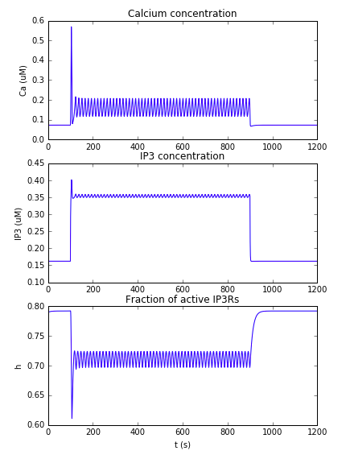

This is the readme for the model for the papers: 1. Riera J, Hatanaka R, Ozaki T, Kawashima R (2011) Modeling the spontaneous Ca2+ oscillations in astrocytes: Inconsistencies and usefulness. J Integr Neurosci 10:439-73 2. Riera J, Hatanaka R, Uchida T, Ozaki T, Kawashima R (2011) Quantifying the uncertainty of spontaneous Ca2+ oscillations in astrocytes: particulars of Alzheimer's disease. Biophys J 101:554-64 3. Manninen T, Havela R, Linne ML (2017) Reproducibility and comparability of computational models for astrocyte calcium excitability Front. Neuroinform. This jupyter notebook was contributed by Dr T Manninen. We implemented and ran the model by Riera et al. (2011) using Jupyter Notebook. Model codes produce results of Figures 1 and 2 in Manninen, Havela, Linne (2017). To run, start jupyter notebook on your system and load the ipython notebook. The Riera2011_Ca_free_constant.ipynb code in its second subplot produces traces similar to figure 4 in the Riera et al J. Int. Neuro. 2011: 